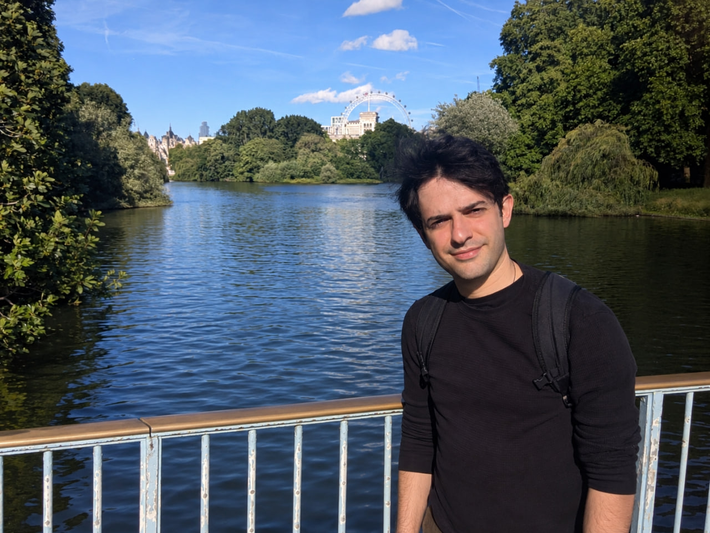

Arya Akhavan
Welcome! I’m Arya Akhavan, a postdoctoral researcher at the University of Oxford, working with Patrick Rebeschini. My current research explores how memory can enhance reasoning and support self-improvement in large language models and reinforcement learning agents. This interest grew out of my visit to Csaba Szepesvári at the University of Alberta in March 2026. I am particularly interested in how agents can accumulate, retrieve, and build on past experience to improve their reasoning and decision-making without updating their model parameters.
Together with Csaba and Patrick, I investigate the capabilities of memory-augmented systems, with a focus on enhancing reasoning and advancing AI safety. Within this research direction, I also collaborate with Murat A. Erdogdu on how memory can help make AI systems safer and more reliable. This collaboration began during my visit to the Vector Institute.
Previously, I spent a year as a postdoctoral fellow at École Polytechnique, working at the intersection of online learning and optimization. I completed my PhD at Institut Polytechnique de Paris and the Istituto Italiano di Tecnologia (IIT) in Genoa, where I was fortunate to be advised by Alexandre B. Tsybakov and Massimiliano Pontil.
Work Experience
-
University of Oxford
Postdoctoral Researcher, September 2024 – Present
Working with Patrick Rebeschini
-
University of Alberta
Visiting Researcher, March 2026 – May 2026
Working with Csaba Szepesvári
-
Vector Institute and University of Toronto
Visiting Researcher, May 2026
Working with Murat A. Erdogdu
-
École Polytechnique de Paris
Postdoctoral Researcher, March 2023 – July 2024
Working with Karim Lounici and El Mahdi El Mhamdi
Education
-
PhD Candidate, Theoretical Statistics
ENSAE IP, Paris, and Istituto Italiano di Tecnologia-Genova (IIT), September 2019 – February 2023
Supervisors: Alexandre B. Tsybakov and Massimiliano Pontil
-
Master M2 MASH Learning and Applications
Paris Dauphine University and École Normale Supérieure Paris-Saclay, Fall 2017 – December 2018
-
First year of Master in Mathematics
Sharif University of Technology, 2016 – 2017
-
B.Sc. in Mathematics
Department of Mathematics, Statistics and Computer Sciences, University of Tehran, 2011 – 2016
